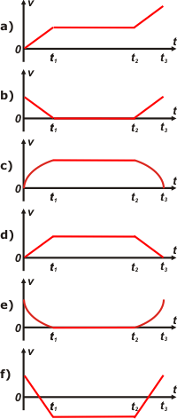

|  |
Analicemos el gráfico del enunciado. Entre 0 y t1 la aceleración es distinta de cero, positiva y constante, de modo que la velocidad debe aumentar uniformemente (una recta oblicua hacia arriba).
Entre t1 y t2 la aceleración vae cero, de modo que la velocidad debe mantenerse constante, tenga el valor que tenga (una recta horizontal).
Y entre t2 y t3 la aceleración vuelve a ser positiva y constante, de modo que la velocidad debe volver a aumentar uniformemente (otra recta oblicua ascendente.
El único gráfico velocidad-tiempo que reune las tres condiciones es el a), que es la respuesta correcta.
Todo lo demás es basura... pero te invito a que dibujes los gráficos de aceleración tiempo para cada uno de ellos. Te animás?
|